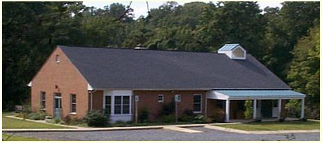 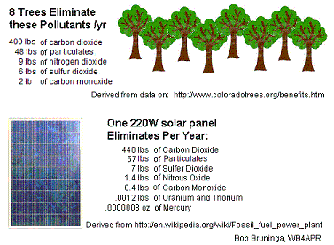
This is a sub-page of our overall Environmental Initiatives web page.
. . .
Environmental Heritage: Quakers have a tradition of simplicity and a testimony for the stewardship of the Earth. We are committed to living in harmony with our environment. After supporting Electric Vehicle charging to reduce the use of gasoline burning during trips to meeting, in 2010 we began to consider our options for solar and completed our Solar System in January 2014 via a fully pre-paid up-front 20 year lease from Solar City. A lease allowed us to get the system for about half of the purchase cost because the leasing company could take all the 50% or so federal, and state tax advantages that the church could not. Unfortunately, Solar City has some restrictions on financing for non-profits, so check with them to see if your organization can qualify.
Greening via Solar: Solar power does not just reduce our electric bills to zero and reduce our dependence on fossil fuels, but each individual solar panel (by replacing coal generated electricity) eliminates the same amount of carbon and pollution contaminants that it takes 8 mature trees to absorb as shown here. Our solar array of almost 40 panels is equivalent to the environment to planting nearly 3 acres of trees!
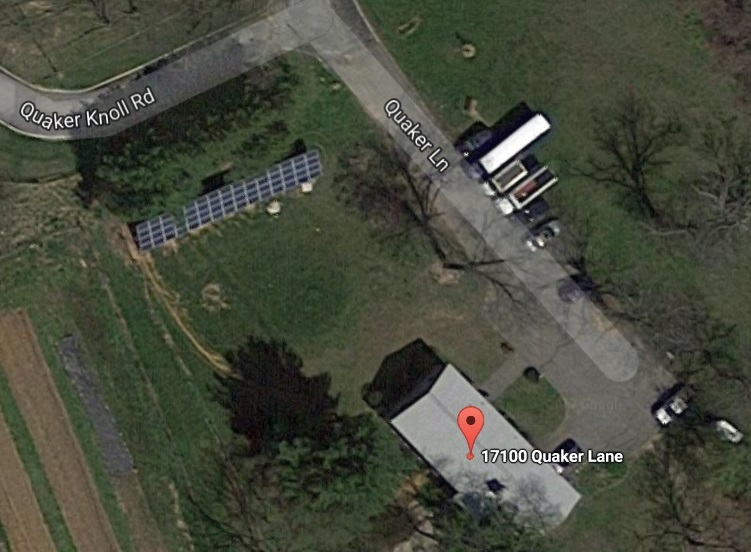 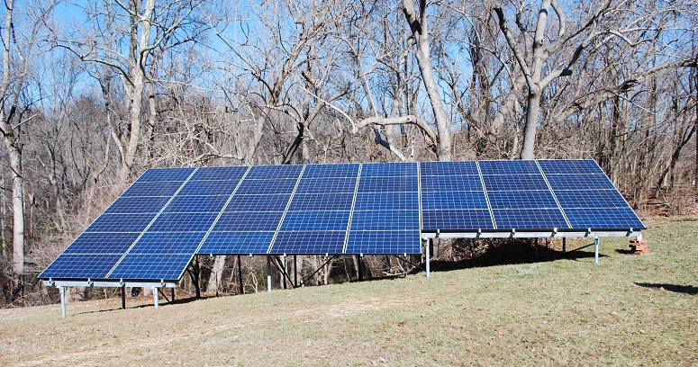
This photo above was the day of installation (15 Jan 2014). The array is that high off the ground to give a place for the snow to slide down on to. The other photo on the right shows the Solar array at Baltimore Yearly Meeting that also went solar.
Solar Outreach: With all the interest in our solar, we received a donation of several dozen decade old panels which we try to share with youth and scout organizations to promote solar at camp under our Camp Solar initiative. One of those installations was at the Friends Wilderness Center in West Va.
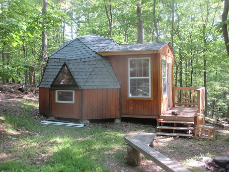 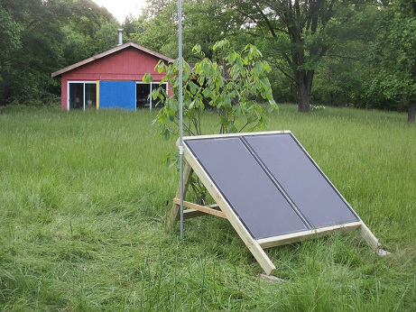
Solar Workshop 6 Feb 2014: In celebration, AFM hosted a Solar Breakfast with the Chesapeake Interfaith Environmental Group and lead a discussion about Solar Energy for Congregations. See our presentation. About 50 people attended from a variety of faith groups and excitement filled the room with ideas and options for going solar.
Our Solar Project: AFM began to explore the addition of solar panels to our property back in 2011 to eliminate our demand for coal generated electricity and resulting carbon emissions. �The ground mounted solar array we ended up with mounted in our front yard was ideally sited with a good southern exposure and out of our way for any future building expansion. The design will produce close to 90% of our electricity needs.(That is, until we switch from burning Propane for heat to a ground source heat pump). In 2011 the cost of solar became equal to the retail cost of coal-fired electricity and since 2012, solar has been cheaper than normal Baltimore Gas and Electric rates by almost half when considered over the next 20 years. Our amortized cost will be about 7 cents/kWh compared to todays BG&E rate of about 14 cents/kWh. Solar is here and is a major player in our future. See the interactive Solar map of the USA. The wind map is even more impressive!
Solar Thermal Water Heating is obsolete: With the high efficiency of modern heatpump systems and the dramatic drop in cost of PV solar panels, the only cost effective way to heat water these days is with PV panels and a heatpump. Even since 2006 solar thermal hot water heating was dead. Now with solar PV dropping ten to one since then, Solar Thermal water heating is really, really dead. So we did not even think once about solar hot water heating.
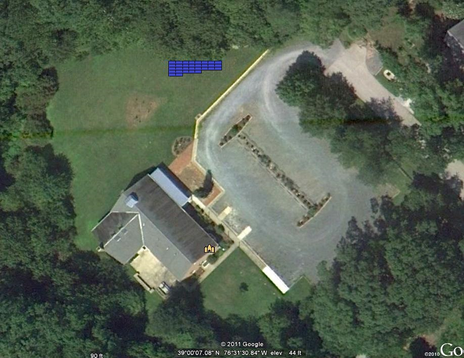
Ground Mounted Array: The google earth view above (north up) indicates that our best solar exposure is in our front yard. This location provides not only the ideal solar exposure but also (in the future) a nice shaded covered gathering area with a nice view out into the woods and over the Luce Creek watershed. The array is actually arranged in an ideal southern alignment for maximum power. Since the array is on a steep slope, the bottom edge is stair-stepped to better align with the slope of the land and to minimize the view from our neighbors after a few strategic shrub plantings. The view below is the view from the Meeting House front door.
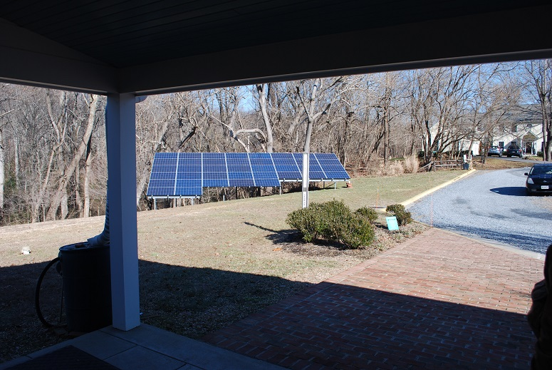
See our original sketch for comparison.
Daily Production: Solar City provides an active web page where we can check the output of our arrays any day since installation. The image below shows the typical ouytput on a good clear day in April. Notice the peak matches our rated power of 9 kW around noon.
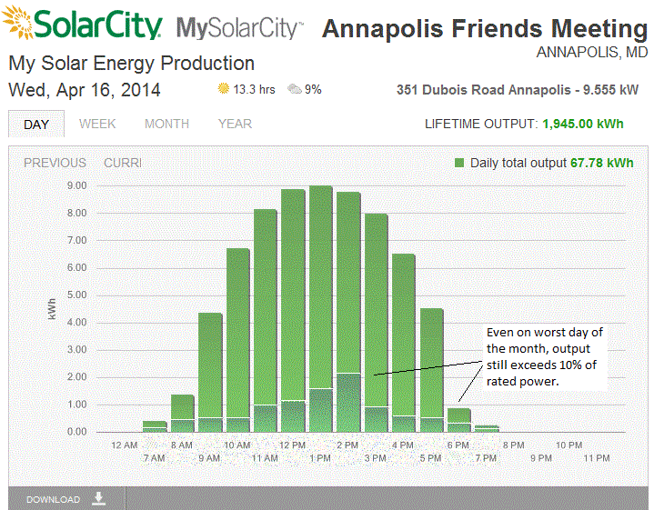
Installation Photo Gallery: The installation was done in 2 days (after 2 years of discussion, planning bureaucrats, re-design, aesthetics, zoning hearings, variance hearings, critical areas issues, required $2000 mitigation tree planting, and of course Quaker process. The first day they drilled in the posts and then they installed the rails then they dug in the power lines using a ditch-witch and finally on the second day Solar City brought in the panels. On the back of the array is the inverter that converts the three 500v strings to 240 VAC and that is trenched to the distribution box in our electrical closet.
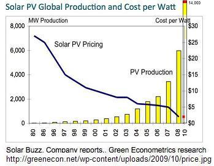
Financial Considerations: Solar has gone down in price by 30-to-1 since 1980, by 10-to-1 since 2000 and by 4-to-1 in just the last 4 years as shown here. As noted before, for the home owner, solar is a great investment reducing the cost of energy for several decades to well below half of even today's utility rates. Further the upfront costs for homeowners is reduced by more than a third by incentive tax credits from the Federal, State and County governments (was fully 1/2 back in 2011). The federal gives a 30% tax credit, the state used to give a $7000 grant back in 2010, though that has fallen now to only $1000 in 2013. And the County then gave additional credit on real-estate taxes to bring the total incentives up to fully 50% of the initial investment! In other words, half the cost you got back in incentives. In addition, the home owner would receive SREC payments of over a thousand dollars a year until solar was fully established in the state. (though these incentives have been tapering down in recent years).
Tax Incentives for Churches... zero: But, most of these significant inccentives are provided through tax credits which offer no value to tax-exempt organizations such as churches! But AFM still wanted to do the right thing and follow government's lead for a clean renewable energy future. The way to do this is not to buy, but lease the array. The leasing company, Solar City, then invests in the array, and then takes all of the up front tax credits and incentives, and then passes most of the savings back to the church in a reduced lease. Normally, Solar City and other solar lease programs provide an advantage to homeowners by eliminating any up-front costs completely (no-money-down). The homeonwer then pays Solar City for their electricty instead of the Utility company, and the leasing company guarantees a rate lower than the utility for the next 20 years.
Pre-paid Lease: But in the easy no-money-down lease approach, most of the financial gains are eaten up by the financing cost in the repayment of the cost of the system. In this case, the monthly electric cost benefit is on the order of 10% or less. But if instead, the full lease is fully prepaid at installation, then there is no monthly bill to the solar company, and the electricity is free for the next 20 years and without 20 years of finance charges, the amortized cost of electricity is down to about 6 cents/kWh for 20 years compared to today's 14 cent rate (which will only go up). At the end of the 20 years, we can buy the array for only $5,000 or let Solar City come remove it. But both Solar City and our committee seem to agree, that in 20 years the state-of-the-art in solar power will be so far advanced, that Solar City will progably agree to simply leave the panels in place rather than pay the labor to remove something of little technical value at that point in time. But the array, will still be producing 85% then as it is producing now. and still be producing for another 20 years beyond that while only decaying down to maybe 70% of its initial production. So leasing is as good as owning. Twenty years is a LONG time in the solar world considering the advances just in the last 5 years.
Financial Summary: So, to sum up the financing in our case, here are the numbers for our 9 kW system:
Compared to a Solar Purchase for a homeowner (which has no tax advantage for a church):
ON YOUR OWN: But remember that our great deal is no longer available from solar CIty or any leasing company. First, Churches generally have no credit and cannot get financing. Second, the solar leasing companies are in the solar business to make money via month-to-month financing for homeowners with no money to invest of their own. They do not make money on a fully pre-paid upfront lease. Hence, it is difficult to find a lease deal for a church. And buying is always better than leasing, but many churches are short of cash. About the best way to go solar is to form a Power Purchase Company of member investers that need to shelter some other passive income. They invest in the church array, and then collect monthly payments from the church to pay off the system at a modest rte of return. The investors are able to take advantage of the tax incentives and eventually after they have been repaid, they may even take additional benefit by donating the panels to the church. But then this is a lot of effort.
Good News in Maryland! - COMMUNITY SOLAR
Maryland has just passed a Community Solar law that will alow anyone to invest in solar by purchasing panels in Community Solar Farms. See the announement.
THESE ARE ONLY ESTIMATES! To find out for sure, for your house or propetry, please get a personal estimate from the Solar Company of your choice. But you can easily assess your property's solar potential by just looking at the size of your roof. Assume you can get about 1 kW from every 75 sqft of unshaded roof. Typical homes can support arrays from 4 kW to as high as 10 kW. The price of those systems will be about $16k to $40k (of which you will get back 40% or more immediately in tax credits). Then go to the government's PVwatts on-line sysem calculator and select your state/city and enter the size of your array and PVwatts will tell you the amount of annual kWh produced and the value at your electric rates (enter 14 cents for Maryland) for ANY sized array, pointing in any direction and tilted at any angle. Surprisingly, arrays pointed as far as East or West do more than 80% of what the ideal South array does. And in fact, a house with both East and West roofs can produce 170% of what an ideal Southern array can produce because it gets the summer sun twice as long each day! PVwatts is a real-world computation as it includes the weather every day for the last 10 years in its calculations.
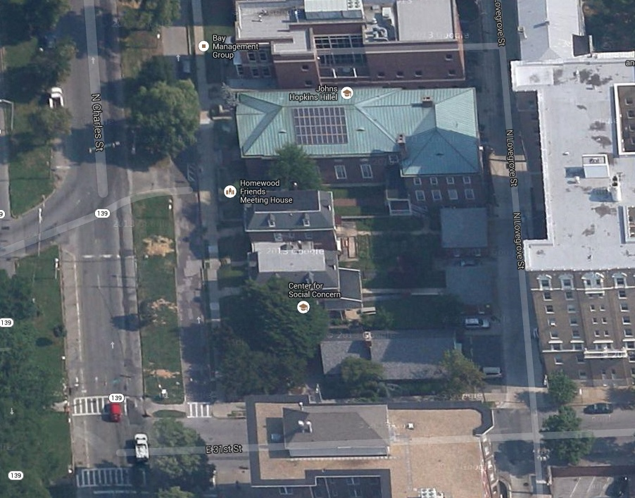
Other Quaker Solar Projects: Homewood Quaker meeting in Baltimore also has invested in a greener future with a similar sized array as shown above.
Roof Considerations: We rejected our roof for two reasons. First, as you can see below, this SE facing roof only has room for about a 3kW system, about one thrid of our needs. Plus, although it gets good morning sun, it is in the shade by 1 or 2 PM. The second reason to avoid the roof is that our 20 year old roof seems to have several years of life left. To put solar on it for 20 years, we would first have to spend MORE THAN THE SOLAR array is worth, just to lay down a new roof first.
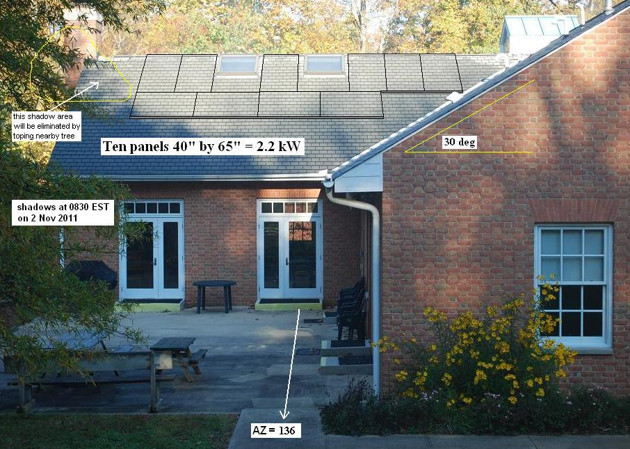
------------------------------------------------------------
Return to Annapolis Friends Meeting Environmental page
Bob Bruninga, PE
lastname@usna.edu
{kind=link}
{kind=link}
{kind=link}
{kind=link}
{kind=link}
{kind=link}
{kind=link}